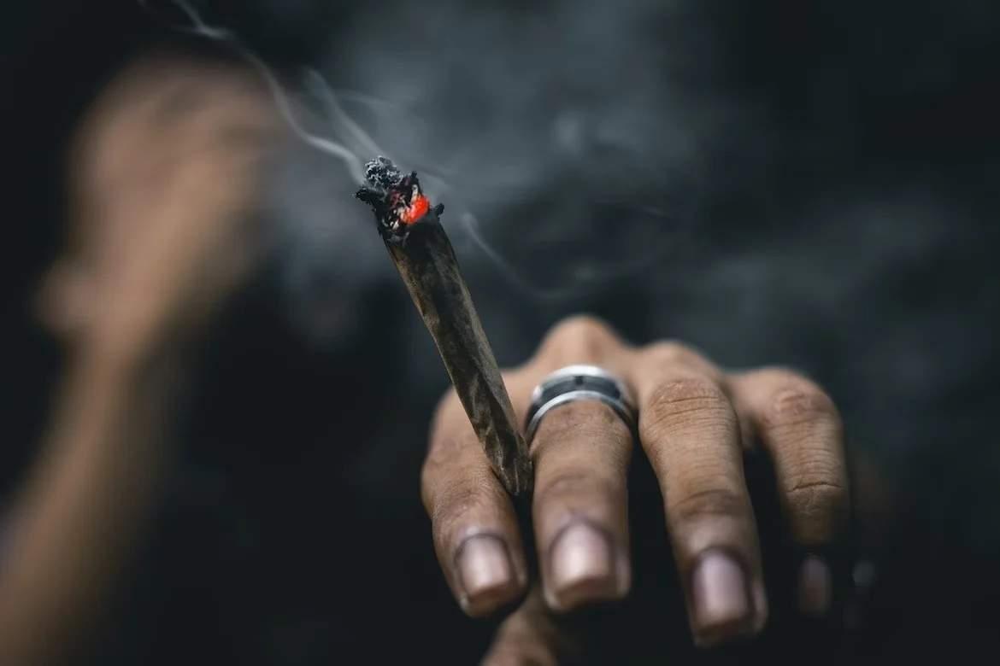
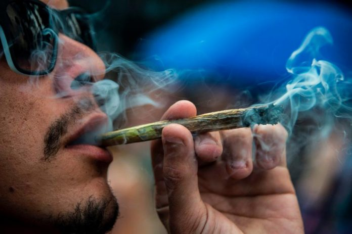

Maconha
Efeitos na saúde mental:
- Aumento do risco de problemas de saúde mental, como ansiedade, depressão e psicose.
Dependência e prejuízo cognitivo:
- Dificuldade em parar de usar maconha devido à dependência.
- Prejuízo na memória, concentração e aprendizado.
Impacto na saúde respiratória:
- Danos aos pulmões devido ao hábito de fumar maconha.


Como se libertar do vício?
Algumas dicas e estratégias:
- Admitir que o uso da maconha se tornou um problema e que você deseja mudar é o primeiro passo crucial.
- Profissional de Saúde Mental: Psicólogos, psiquiatras ou conselheiros especializados em dependência podem ajudar a desenvolver estratégias personalizadas para lidar com o vício.
- Grupos de Apoio: Grupos como Narcóticos Anônimos (NA) oferecem suporte e partilha de experiências com outras pessoas que estão passando pelo mesmo processo.
- Definir Objetivos Claros: Estabeleça metas específicas, como reduzir gradualmente o uso ou parar completamente.
- Identificar Gatilhos: Reconheça situações, pessoas ou emoções que levam ao uso da maconha e desenvolva maneiras de evitá-los ou lidar com eles.